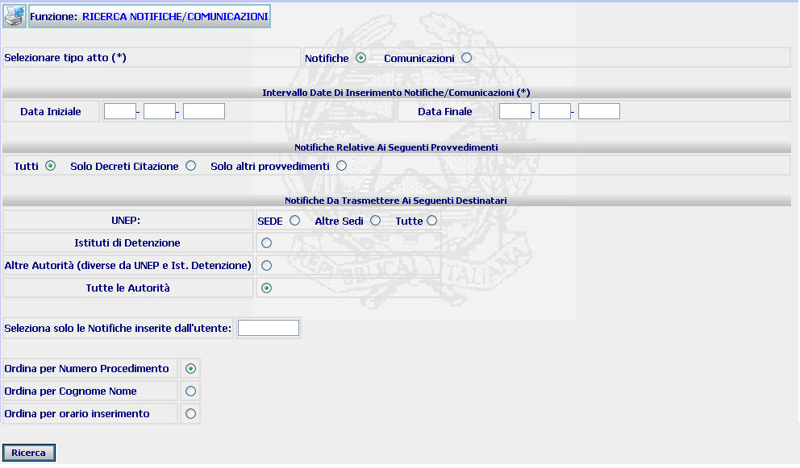
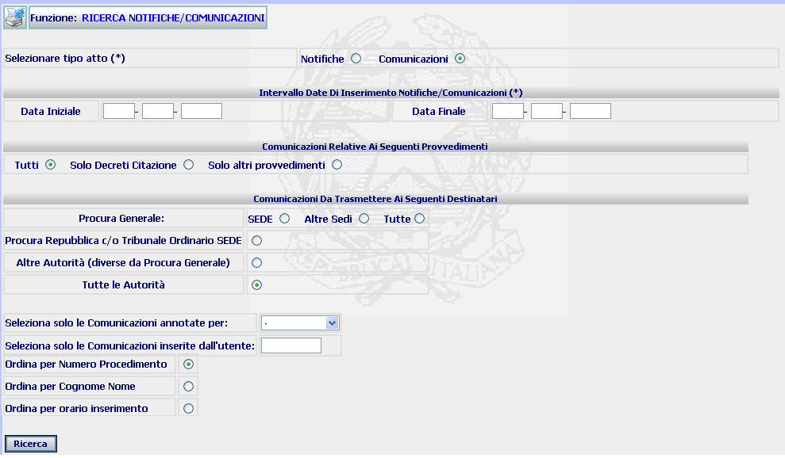
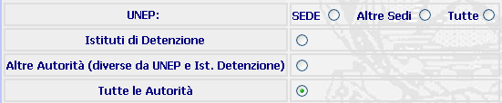
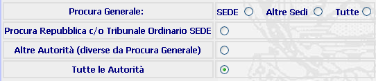
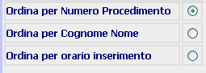

RICERCHE NOTIFICHE/COMUNICAZIONI: La funzione consente di operare ricerche di provvedimenti da trasmettere per la notifica o per comunicazione alle competenti Autorità al fine di produrre l'elenco degli stessi.
LE MASCHERE VIDEO
La funzione viene realizzata attraverso le maschere seguenti in cui viene richiesto di compilare uno o più campi ed i radio button presenti nelle quattro sezioni di cui sono composte le maschere stesse:
| Selezione tipo di atto | |
| Intervallo date di inserimento Notifiche/Comunicazioni | |
| Notifiche relative ai seguenti provvedimenti | |
| Notifiche da trasmettere ai seguenti destinatari |
MASCHERA 1

MASCHERA 2

COME FARE PER ...
| Per operare la ricerca dell'elenco delle comunicazioni o di quello delle notifiche da trasmettere, occorre selezionare uno dei due radio button presenti nella prima sezione |
|
Per indicare il lasso temporale al quale limitare la ricerca occorre: |
indicare la data di inizio e fine del periodo di riferimento
confermare i dati inseriti nella maschera agendo sul bottone
. Se esiste uno o più provvedimenti rispondenti agli estremi atto indicati, allora viene visualizzata la maschera di elenco notifiche/comunicazioni richieste nel periodo
|
Per effettuare una ricerca relativa a tutti i provvedimenti ovvero limitata ai soli decreti di citazione o ai soli altri provvedimenti, occorre selezionare uno dei radio button presenti nella terza sezione |
|
Per effettuare una ricerca relativa a tutti i possibili destinatari ovvero limitarla solo ad una delle categorie presenti, occorre |
selezionare la categoria di destinatari utilizzando uno dei radio button presenti nella quarta sezione delle due maschere:
MASCHERA 1

MASCHERA 2

confermare i dati inseriti nella maschera agendo sul bottone
|
Per limitare la ricerca ai provvedimenti inseriti da un singolo utente, occorre: |
selezionare il codice utente dell'operatore interessato digitandolo nel campo "Seleziona solo le notifiche/comunicazioni inserite dall'utente"
confermare i dati inseriti nella maschera agendo sul bottone
|
Per limitare la ricerca a tutte le comunicazioni ovvero solo a quelle annotate per comunicazione o per l'esecuzione (MASCHERA 2), occorre: |
compilare il campo "Seleziona solo le Comunicazioni annotate per" tramite l'apposita tendina
confermare i dati inseriti nella maschera agendo sul bottone
|
Per determinare l'ordine di presentazione dei provvedimenti nell'elenco notifiche/comunicazioni richieste nel periodo , occorre: |
selezionare il tipo di ordine prescelto utilizzando uno dei radio button presenti

confermare i dati inseriti nella maschera agendo sul bottone
CAMPI
I dati attraverso i quali è possibile effettuare la ricerca sono i seguenti:
| Data iniziale - Data finale | Campi (obbligatori) attraverso i quali è possibile inserire l'intervallo temporale al quale si vuole limitare la ricerca. |
| Seleziona solo le notifiche/comunicazioni inserite dall'utente | Campo da compilare (con il relativo codice utente) per limitare la ricerca ai provvedimenti inseriti da un singolo utente |
| Seleziona solo le comunicazioni annotate per | Campo da compilare per limitare la ricerca a tutte le comunicazioni ovvero solo a quelle annotate per comunicazione o per l'esecuzione (MASCHERA 2) |
PULSANTI
E' presente il pulsante
 di stampa del contesto (videata)
di stampa del contesto (videata)
BOTTONI
Oltre ai comandi funzionali relativi al menù verticale sono presenti i seguenti comandi:
|
COMANDI |
DESCRIZIONE |
|
|
A fronte di tale comando, il sistema dopo aver verificato la validità dei dati specificati, presenta la maschera contenente l'elenco notifiche/comunicazioni richieste nel periodo |
CONTROLLI
A fronte della pressione
del bottone
 , il
sistema verifica che:
, il
sistema verifica che:
tutti i campi a testo libero e quelli selezionabili da una tendina siano stati compilati correttamente
Esista uno o più provvedimenti rispondenti ai canali di ricerca selezionati.
|
Se il sistema non troverà alcun risultato, verrà visualizzato il seguente messaggio |